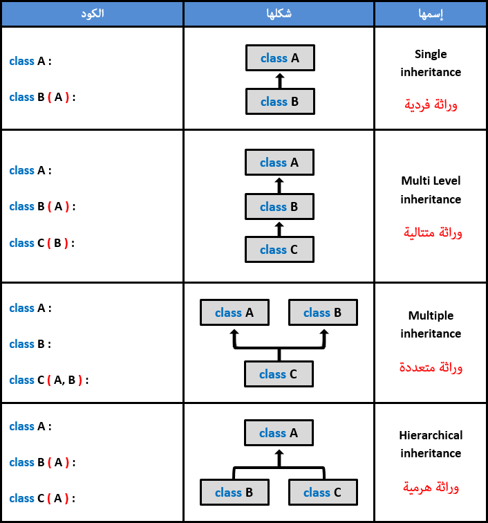
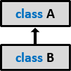
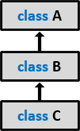
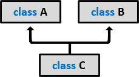
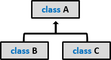
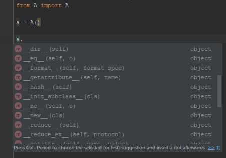

Pythonالوراثة في بايثون
مفهوم الوراثة في بايثون
في البداية, كلمة وراثة تعني تضمين محتوى كلاس في كلاس آخر.
في بايثون, الكلاس يمكنه أن يرث من كلاس آخر حتى يحصل على الدوال و المتغيرات الموجودة فيه.
إذاً فكرة الوراثة بسيطة لكن فائدتها قوية جداً. فمثلاً إذا كنت تريد إنشاء كلاس جديد و لاحظت أنه يوجد كلاس جاهز يحتوي على كودات قد تفيدك يمكنك استغلالها بدل كتابتها من الصفر, أي يمكنك جعل الكلاس الذي قمت بتعريفه يرث هذا الكلاس, و بعدها يمكنك إستخدام جميع المتغيرات و الدوال التي ورثها الكلاس الجديد من الكلاس الجاهز.
لجعل الكلاس يرث من كلاس آخر, نضع بعد إسم الكلاس قوسين و بداخلهما إسم الكلاس الذي نريده أن يرث منه.
في حال كان الكلاس يرث من أكثر من كلاس, يجب وضع فاصلة بين كل كلاسَين نضعهما بين القوسين.
مصطلحات تقنية
الوراثة تسمى Inheritance في اللغة الإنجليزية.
الكلاس الذي يرث من كلاس آخر يقال له الكلاس الإبن, و يسمى Subclass و يقال له أيضاً ( Derived Class, Extended Class أو Child Class ).
الكلاس الذي يورّث محتوياته لكلاس آخر يسمى الكلاس الأب, و يسمى Superclass و يقال له أيضاً ( Base Class أو Parent Class ).
إنتبه
الـ Subclass يرث كل شيء موجود في الـ Superclass بشكل مباشر ما عدا الخصائص التي تم تعريفها كباراميترات بداخل الدالة __init__() و السبب في ذلك أن هذه الدالة تولد الخصائص للكائن و تربطها بالكلاس لحظة إنشاء الكائن.
أي إذا لم تنشئ كائن من الكلاس لن يتم إستدعاء هذه الدالة أصلاً و لهذا لا تعتبر كأنها خصائص موجودة بشكل مباشر في الكلاس نفسه.
في حال أردت إستدعاء الدالة __init__() الموجودة في الـ Superclass نستخدم دالة جاهزة إسمها super().
لا تقلق إذا لم تفهم كل ما ذكرناه الآن لأنك ستفهم كل هذه الامور بتفصيل من الأمثلة. و الدالة super() سنشرحها بتفصيل في الدرس التالي.
أشكال الوراثة في بايثون
في بايثون يوجد 4 أشكال للوراثة كما في الجدول التالي.

إذاَ أشكال الوراثة في بايثون هي كالتالي:
وراثة فردية: تعني كلاس يرث من كلاس واحد فقط.
وراثة متتالية: تعني كلاس يرث من كلاس واحد و هذا الكلاس كان في الأصل يرث من كلاس آخر.
وراثة هرمية: تعني أن الكلاس موروث من قبل أكثر من كلاس.
وراثة متعددة: تعني أن الكلاس يرث من أكثر من كلاس.
أمثلة تطبيقية على الوراثة في بايثون
في جميع الأمثلة سنفترض أن كل كلاس معرف بداخل ملف خاص كما يفعل المطورون على أرض الواقع.
مثال عن الوراثة الفردية
في المثال التالي قمنا بتعريف كلاس إسمه A يحتوي على متغير إسمه x و دالة إسمها print_msg().
بعدها قمنا بإنشاء كلاس إسمه B يحتوي على متغير إسمه y و يرث من الكلاس A.
شكل الوراثة سيكون كالتالي.

المثال الأول
A.py
# print_msg و دالة إسمها x يحتوي على متغير إسمه A هنا قمنا بتعريف كلاس إسمه
class A:
x = 10
def print_msg(self):
print('Hello from class A')
B.py
# حتى نستطيع الوراثة منه A.py الموجود في الملف A هنا قمنا بتضمين الكلاس
from A import A
# y و يحتوي على متغير إسمه A يرث من الكلاس B هنا قمنا بتعريف كلاس إسمه
class B(A):
y = 20
Test.py
# حتى نستطيع إنشاء كائن منه B.py الموجود في الملف B هنا قمنا بتضمين الكلاس
from B import B
# B هنا قمنا بإنشاء كائن من الكلاس
b = B()
# B و الذي تم تعريفه في الكلاس b الموجود في الكائن y هنا قمنا بطباعة قيمة المتغير
print('y:', b.y)
# A من الكلاس B و الذي ورثه الكلاس b الموجود في الكائن x هنا قمنا بطباعة قيمة المتغير
print('x:', b.x)
# A من الكلاس B و التي ورثها الكلاس b الموجودة في الكائن print_msg() هنا قمنا باستدعاء الدالة
b.print_msg()
•سنحصل على النتيجة التالية عند تشغيل الملف Test.
y: 20
x: 10
Hello from class A
مثال عن الوراثة المتتالية
في المثال التالي قمنا بتعريف كلاس إسمه A يحتوي على دالة إسمها print_a().
بعدها قمنا بإنشاء كلاس إسمه B يحتوي على دالة إسمها print_b() و يرث من الكلاس A.
بعدها قمنا بإنشاء كلاس إسمه C يحتوي على دالة إسمها print_c() و يرث من الكلاس B.
شكل الوراثة سيكون كالتالي.

المثال الثاني
A.py
# print_a يحتوي على دالة إسمها A هنا قمنا بتعريف كلاس إسمه
class A:
def print_a(self):
print('Hello from class A')
B.py
# حتى نستطيع الوراثة منه A.py الموجود في الملف A هنا قمنا بتضمين الكلاس
from A import A
# print_b و يحتوي على دالة إسمها A يرث من الكلاس B هنا قمنا بتعريف كلاس إسمه
class B(A):
def print_b(self):
print('Hello from class B')
C.py
# حتى نستطيع الوراثة منه B.py الموجود في الملف B هنا قمنا بتضمين الكلاس
from B import B
# print_c و يحتوي على دالة إسمها B يرث من الكلاس C هنا قمنا بتعريف كلاس إسمه
class C(B):
def print_c(self):
print('Hello from class C')
Test.py
# حتى نستطيع إنشاء كائن منه C.py الموجود في الملف C هنا قمنا بتضمين الكلاس
from C import C
# C هنا قمنا بإنشاء كائن من الكلاس
c = C()
# c هنا قمنا باستدعاء جميع الدوال الموجودة في الكائن
c.print_a()
c.print_b()
c.print_c()
•سنحصل على النتيجة التالية عند تشغيل الملف Test.
Hello from class A
Hello from class B
Hello from class C
مثال عن الوراثة المتعددة
في المثال التالي قمنا بتعريف كلاس إسمه A يحتوي على دالة إسمها print_a().
بعدها قمنا بإنشاء كلاس إسمه B يحتوي على دالة إسمها print_b().
بعدها قمنا بإنشاء كلاس إسمه C يحتوي على دالة إسمها print_c() و يرث من الكلاس A و الكلاس B.
شكل الوراثة سيكون كالتالي.

المثال الثالث
A.py
# print_a يحتوي على دالة إسمها A هنا قمنا بتعريف كلاس إسمه
class A:
def print_a(self):
print('Hello from class A')
B.py
# print_b يحتوي على دالة إسمها B هنا قمنا بتعريف كلاس إسمه
class B:
def print_b(self):
print('Hello from class B')
C.py
# حتى نستطيع الوراثة منهما B.py الموجود في الملف B و الكلاس A.py الموجود في الملف A هنا قمنا بتضمين الكلاس
from A import A
from B import B
# print_c و يحتوي على دالة إسمها ,B و الكلاس A يرث من الكلاس C هنا قمنا بتعريف كلاس إسمه
class C(A, B):
def print_c(self):
print('Hello from class C')
Test.py
# حتى نستطيع إنشاء كائن منه C.py الموجود في الملف C هنا قمنا بتضمين الكلاس
from C import C
# C هنا قمنا بإنشاء كائن من الكلاس
c = C()
# c هنا قمنا باستدعاء جميع الدوال الموجودة في الكائن
c.print_a()
c.print_b()
c.print_c()
•سنحصل على النتيجة التالية عند تشغيل الملف Test.
Hello from class A
Hello from class B
Hello from class C
مثال عن الوراثة الهرمية
في المثال التالي قمنا بتعريف كلاس إسمه A يحتوي على دالة إسمها print_a().
بعدها قمنا بإنشاء كلاس إسمه B يحتوي على دالة إسمها print_b() و يرث من الكلاس A.
بعدها قمنا بإنشاء كلاس إسمه C يحتوي على دالة إسمها print_c() و يرث من الكلاس A أيضاً.
شكل الوراثة سيكون كالتالي.

المثال الرابع
A.py
# print_a يحتوي على دالة إسمها A هنا قمنا بتعريف كلاس إسمه
class A:
def print_a(self):
print('Hello from class A')
B.py
# حتى نستطيع الوراثة منه A.py الموجود في الملف A هنا قمنا بتضمين الكلاس
from A import A
# print_b و يحتوي على دالة إسمها A يرث من الكلاس B هنا قمنا بتعريف كلاس إسمه
class B(A):
def print_b(self):
print('Hello from class B')
C.py
# حتى نستطيع الوراثة منه A.py الموجود في الملف A هنا قمنا بتضمين الكلاس
from A import A
# print_c و يحتوي على دالة إسمها A يرث من الكلاس C هنا قمنا بتعريف كلاس إسمه
class C(A):
def print_c(self):
print('Hello from class C')
Test.py
# حتى نستطيع إنشاء كائنات منهما C.py الموجود في الملف C و الكلاس B.py الموجود في الملف B هنا قمنا بتضمين الكلاس
from B import B
from C import C
# و استدعاء جميع الدوال الموجودة فيه C هنا قمنا بإنشاء كائن من الكلاس
c = C()
c.print_a()
c.print_c()
# و استدعاء جميع الدوال الموجودة فيه B هنا قمنا بإنشاء كائن من الكلاس
b = B()
b.print_a()
b.print_b()
•سنحصل على النتيجة التالية عند تشغيل الملف Test.
Hello from class A
Hello from class B
Hello from class A
Hello from class C
معرفة طبيعة العلاقة بين الكلاسات و الكائنات في بايثون
الجدول التالي يحتوي على دوال جاهزة في بايثون يمكن إستخدامها لمعرفة طبيعة العلاقة بين كلاس و آخر أو بين كائن و آخر.
ملاحظة: في الأمثلة الموضوع إستخدمنا الكلمة المفتاحية pass من أجل تعريف كلاسات فارغة. لذلك ننصحك بالإضطلاع على الأمثلة.
| إسم الدالة مع تعريفها |
issubclass(subclass, superclass)
تستخدم لمعرفة ما إذا كان الكلاس الذي نمرره مكان الباراميتر subclass يرث من الكلاس الذي نمرره مكان الباراميتر superclass أم لا.
ترجع True في حال كان كذلك, و غير ذلك ترجع False.
شاهد المثال » |
isinstance(obj, classinfo)
تستخدم لمعرفة ما إذا كان الكائن الذي نمرره مكان الباراميتر obj تم إنشاؤه من الكلاس الذي نمرره مكان الباراميتر classinfo أم لا.
ترجع True في حال كان كذلك, و غير ذلك ترجع False.
شاهد المثال » |
تضارب الأسماء عند وراثة أكثر من كلاس في بايثون
عندما يقوم الكلاس بوارثة أكثر من كلاس فيوجد إحتمال كبير أن يرث خصائص و دوال عندها نفس الإسم و بالتالي سيحدث تضارب في الأسماء.
الآن عليك معرفة أن التضارب في الأسماء لا يسبب خطأ في الكود عند التشغيل لكنه قد يؤدي لحدوث خطأ منطقي في النتيجة المرجو الحصول عليها.
معلومة تقنية
في حال كان الكلاس يرث من كلاسيَن و كان يوجد في كلاهما متغير عنده نفس الإسم و دالة عندها نفس الإسم, سيقوم مفسّر لغة بايثون بتوريث الكلاس المتغير و الدالة الموجودين في أول كلاس يرث منه. لأن أول كلاس يتم الوراثة منه يتم إعطاؤه أولوية التنفيذ في حال حدث تضارب في الأسماء.
في المثال التالي قمنا بتعريف كلاس إسمه A يحتوي على دالة إسمها print_msg().
بعدها قمنا بإنشاء كلاس إسمه B يحتوي على دالة إسمها print_msg() أيضاً.
بعدها قمنا بإنشاء كلاس إسمه C يرث من الكلاس A و الكلاس B و يحتوي على دالة إسمها call_print_msg().
إذاً هنا عندنا وراثة متعددة و شكلها كالتالي.
مثال
A.py
# print_msg يحتوي على دالة إسمها A هنا قمنا بتعريف كلاس إسمه
class A:
def print_msg(self):
print('Hello from class A')
B.py
# print_msg يحتوي على دالة إسمها B هنا قمنا بتعريف كلاس إسمه
class B:
def print_msg(self):
print('Hello from class B')
C.py
# حتى نستطيع الوراثة منهما B.py الموجود في الملف B و الكلاس A.py الموجود في الملف A هنا قمنا بتضمين الكلاس
from A import A
from B import B
# call_print_msg و يحتوي على دالة إسمها ,B و الكلاس A يرث من الكلاس C هنا قمنا بتعريف كلاس إسمه
# A و بالتالي عند حدوث أي تضارب سيتم إستدعاء الشيء الموجود في الكلاس ,B و من ثم يرث من الكلاس A يرث من الكلاس C هنا جعلنا الكلاس
class C(A, B):
# A الموجودة في الكلاس print_msg() سيتم إستدعاء الدالة call_print_msg() عند إستدعاء الدالة
def call_print_msg(self):
self.print_msg()
Test.py
# حتى نستطيع إنشاء كائن منه C.py الموجود في الملف C هنا قمنا بتضمين الكلاس
from C import C
# C هنا قمنا بإنشاء كائن من الكلاس
c = C()
# B أو الموجودة في الكلاس A الموجودة في الكلاس print_msg() لنعرف إن كانت ستنفذ الدالة call_print_msg() هنا قمنا باستدعاء الدالة
c.call_print_msg()
•سنحصل على النتيجة التالية عند تشغيل الملف Test.
Hello from class A
حل مشكلة تضارب الأسماء في بايثون
في حال كنت تريد إنشاء كلاس و تريد ضمان عدم حدوث مشكلة في تضارب الأسماء عند وراثة هذا الكلاس, يمكنك إعتماد مبدأ إخفاء البيانات ( Data Hiding ) عند تسمية المتغيرات و الدوال. إذاً الفكرة من إخفاء البيانات جعل المبرمج قادر على وضع نفس أسماء المتغيرات و الدوال في الكلاس الأب و الكلاس الإبن مع ضمان عدم حدوث أي تضارب.
الآن, يمكنك ببساطة وضع الرمز __ في بداية إسم المتغير أو الدالة لتصبح قادر على إستخدام نفس الإسم في الكلاس الذي يرثهم.
عندها سيتولى مفسّر لغة بايثون التفريق بين الأشياء الموجودة في الكلاس الأب و الأشياء الموجودة في الكلاس الإبن.
معلومة تقنية
عند وراثة شيء خفي سواء كان دالة أو متغير فإنك تصل له كالتالي: تضع الرمز _ClassName__ItsName
فمثلاً إذا قمت بإنشاء كلاس إسمه A و وضعت فيه متغير خفي إسمه __x, في حال قمت بوراثة هذا المتغير فإنك تستطيع الوصول له كالتالي _A__x.
إذاّ مفسر بايثون يعيد تسمية المتغير الخفي نسبة لإسم الكلاس و هكذا يضمن أن لا يحدث تضارب في الأسماء.
في المثال التالي قمنا بتعريف كلاس يرث من كلاس و كلاهما يحتويان على متغير خفي إسمه __x و دالة خفية إسمها __print_msg().
بعدها قمنا بإنشاء كائن من الكلاس الإبن و فيه عرضنا قيمة كل المتغيرات الخفية الموجودة فيه و قمنا باستدعاء الدوال الخفية أيضاَ.
مثال
A.py
# __print_msg و دالة خفية إسمها __x يحتوي على متغير خفي إسمه A هنا قمنا بتعريف كلاس إسمه
class A:
__x = 10
def __print_msg(self):
print('Hello from class A')
B.py
# حتى نستطيع الوراثة منه A.py الموجود في الملف A هنا قمنا بتضمين الكلاس
from A import A
# __print_msg و دالة خفية إسمها __x و يحتوي على متغير خفي إسمه ,A يرث من الكلاس B هنا قمنا بتعريف كلاس إسمه
class B(A):
__x = 20
def __print_msg(self):
print('Hello from class B')
Test.py
# حتى نستطيع إنشاء كائن منه B.py الموجود في الملف B هنا قمنا بتضمين الكلاس
from B import B
# C هنا قمنا بإنشاء كائن من الكلاس
b = B()
# B الموجود في الكلاس __x و قيمة المتغير A الموجود في الكلاس __x هنا قمنا بطباعة قيمة المتغير
print('__x obtained from class A =', b._A__x)
print('__x obtained from class B =', b._B__x)
# B الموجودة في الكلاس __print_msg() و الدالة A الموجودة في الكلاس __print_msg() هنا قمنا باستدعاء الدالة
b._A__print_msg()
b._B__print_msg()
•سنحصل على النتيجة التالية عند تشغيل الملف Test.
__x obtained from class A = 10
__x obtained from class B = 20
Hello from class A
Hello from class B
الكلاس object في بايثون
في بايثون, أي كلاس جاهز أو تنشئه بنفسك يرث بشكل تلقائي من كلاس إسمه object.
إذاَ, الكلاس object يعتبر Superclass لجميع الكلاسات في بايثون.
و بالتالي فإن أي كائن ننشئه سيحتوي على كل الخصائص و الدوال الموجودة فيه.
الآن, إذا قمنا بتعريف كلاس إسمه Test لا يرث من أي كلاس.
فكن على يقين أن مفسّر لغة بايثون سيجعل الكلاس Test يرث بشكل تلقائي من الكلاس object كالتالي.
Test(object):
و بالنسبة للدوال التي تظهر لك أثناء كتابة الكود بمجرد أن تضع نقطة بعد إسم الكائن و التي لم تقم بتعريفها بنفسك كما في الصورة التالية.
فهذه الدوال وجدت في الكائن لأنه تم إنشاء هذا الكائن في الأساس من كلاس يرث من الكلاس object.

معلومة تقنية
الكلاس object موضوع بداخل موديول إسمه builtins.py.
هذا الموديول يقوم مفسّر بايثون بتضمينه بشكل تلقائي في كل كلاس, لهذا السبب لا تحتاج أن تفعل له import.
أيضاَ عليك معرفة أن الموديول builtins.py يحتوي على كل الدوال التي كنا نستخدمها سابقاً و التي كنا نقول أنها دوال جاهزة في بايثون.
و هو يحتوي أيضاً على كلاسات كثيرة غير الكلاس object لكننا لن نتطرق إليها في هذا الدرس.
الجدول التالي يحتوي على خصائص الكلاس object.
| إسم الخاصية مع تعريفها |
__class__
ترجع إسم الكلاس الذي أنشئ منه الكائن الذي قام باستدعائها. |
__dict__
ترجع كائن dict فيه كل خصائص الكلاس الذي أنشئ منه الكائن الذي قام باستدعائها. |
__doc__
ترجع التفسير ( Documentation ) الموضوع في الكلاس الذي أنشئ منه الكائن الذي قام باستدعائها. |
__module__
ترجع إسم الموديول الذي يحتوي على الكلاس الذي أنشئ منه الكائن الذي قام باستدعائها. |
الجدول التالي يحتوي على بعض دوال الكلاس object.
| إسم الدالة مع تعريفها |
__init__()
تستخدم هذه الدالة لتعريف خصائص للكائن و إعطائهم قيم أولية.
يتم إستدعاء هذه الدالة بشكل تلقائي عند إنشاء كائن من الكلاس الذي يحتويها. |
__del__()
تستخدم هذه الدالة لتنفيذ أوامر معينة عندما يتم مسح الكائن من الذاكرة.
يتم إستدعاء هذه الدالة بشكل تلقائي عند مسح كائن من الكلاس الذي يحتويها. |
__sizeof__()
ترجع عدد صحيح يمثل حجم الكائن ( أي المساحة التي يحتلها ) في الذاكرة بالـ Byte. |
__repr__()
ترجع نص يمثل شكل الكائن كما الذي قام باستدعائها في الذاكرة مع احترام نوع و قيمة الكائن.
ملاحظة: استدعاء هذه الدالة مطابق لاستدعاء دالة إسمها repr(object) موضوعة مباشرةً في الموديول builtins.py. |
__str__()
ترجع نص يمثل شكل الكائن كما الذي قام باستدعائها في الذاكرة.
ملاحظة: استدعاء هذه الدالة مطابق لاستدعاء دالة إسمها str(object) موضوعة مباشرةً في الموديول builtins.py. |
في المثال التالي قمنا بتعريف كلاس إسمه Car وضعنا فيه الدالة __init__() و الدالة __del__().
بعدها قمنا بإنشاء كائن منه و استدعاء الخصائص و الدوال التي ورثها الكلاس Car في الأساس من الكلاس object.
المثال الأول
Car.py
# Car هنا قمنا بتعريف كلاس إسمه
class Car:
# ( Documentation ) هنا وضعنا شرح للكلاس
'''This class represent any car object'''
# و التي سيتم استدعاءها بشكل تلقائي عند إنشاء الكائن __init__() هنا قمنا بتعريف الدالة
def __init__(self, model, year, color, price):
self.model = model
self.year = year
self.color = color
self.price = price
# و التي سيتم استدعاءها بشكل تلقائي عند مسح الكائن من الذاكرة __del__() هنا قمنا بتعريف الدالة
def __del__(self):
print('Object is destroyed')
Test.py
# حتى نستطيع إنشاء كائن منه Car.py الموجود في الملف Car هنا قمنا بتضمين الكلاس
from Car import Car
# Car هنا قمنا بإنشاء كائن من الكلاس
obj = Car('BMW', '2015', 'Black', 22000)
# object من الكلاس Car التي ورثها الكلاس obj هنا قمنا بعرض بعض قيم خصائص الكائن
print('Object class name: ', obj.__class__)
print('Object module name: ', obj.__module__)
print('Object class documentation: ', obj.__doc__)
print('Object properties and values:', obj.__dict__)
# object من الكلاس Car التي ورثها الكلاس obj هنا قمنا باستدعاء بعض دوال الكائن
print('Object size in Byte: ', obj.__sizeof__())
print('Object representation: ', obj.__repr__())
print('Object string representation:', obj.__str__())
# بشكل تلقائي __del__() و بالتالي سيتم إستدعاء الدالة obj هنا قمنا بمسح الكائن
del obj
•سنحصل على النتيجة التالية عند تشغيل الملف Test.
Object class name: <class 'Car.Car'>
Object module name: Car
Object class documentation: This class represent any car object
Object properties and values: {'model': 'BMW', 'year': '2015', 'color': 'Black', 'price': 22000}
Object size in Byte: 16
Object representation: <Car.Car object at 0x01080A30>
Object string representation: <Car.Car object at 0x01080A30>
Object is destroyed
لعلك تتساءل الآن: ما الفرق بين الدالة __repr__() و __str__() حيث أنك لم تلاحظ أي فرق بينهما في المثال السابق.
المثال التالي يوضح لك الفرق بينهما.
المثال الثاني
Test.py
# 'Python Tutorial' هنا قمنا بإنشاء كائن نصي قيمته
obj = 'Python Tutorial'
# ستظهر قيمته كنص __repr__() لاحظ أن الدالة
print('Object representation: ', obj.__repr__())
# ستظهر قيمته فقط __str__() بينما الدالة
print('Object string representation:', obj.__str__())
•سنحصل على النتيجة التالية عند تشغيل الملف Test.
Object representation: 'Python Tutorial'
Object string representation: Python Tutorial

 محرر الويب
محرر الويب نظام الألوان
نظام الألوان محول الوحدات
محول الوحدات محلل عناوين الشبكات
محلل عناوين الشبكات